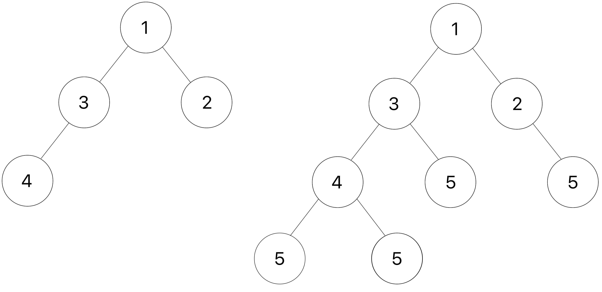

⚠️ This content is archived and is retained exclusively for reference. Find the most current offering here.
Homework 9: Trees
Due by 11:59pm on Wednesday, April 15
Instructions
Download hw09.zip. Inside the archive, you will find a file called
hw09.py, along with a copy of the ok autograder.
Submission: When you are done, submit the assignment to Gradescope. You may submit more than once before the deadline; only the final submission will be scored. Check that you have successfully submitted your code on Gradescope. See Lab 0 for more instructions on submitting assignments.
Using Ok: If you have any questions about using Ok, please refer to this guide.
Readings: You might find the following references useful:
Grading: Homework is graded based on correctness. Each incorrect problem will decrease the total score by one point. This homework is out of 6 points.
Required Questions
Trees
Q1: Square
Write a function label_squarer that mutates a Tree with numerical labels so
that each label is squared.
def label_squarer(t):
"""Mutates a Tree t by squaring all its elements.
>>> t = Tree(1, [Tree(3, [Tree(5)]), Tree(7)])
>>> label_squarer(t)
>>> t
Tree(1, [Tree(9, [Tree(25)]), Tree(49)])
"""
"*** YOUR CODE HERE ***"
Use Ok to test your code:
python3 ok -q label_squarerQ2: Add Leaves
Implement add_d_leaves, a function that takes in a Tree instance t and a number v.
We define the depth of a node in t to be the number of edges from the root to that node. The depth of root is therefore 0.
For each node in the tree, you should add d leaves to it, where d is the depth of the node. Every added leaf should have a label of v. If the node at this depth has existing branches, you should add these leaves to the end of that list of branches.
For example, you should be adding 1 leaf with label v to each node at depth 1, 2 leaves to each node at depth 2, and so on.
Here is an example of a tree t (shown on the left) and the result after add_d_leaves is applied with v as 5.

Hint: Use a helper function to keep track of the depth!
Hint: Be careful about when you add the new leaves to the tree. We only want to add leaves to the original nodes in the tree, not to the nodes we added.
Take a look at the doctests below and try drawing out the second doctest to visualize how the function is mutating
t3.
def add_d_leaves(t, v):
"""Add d leaves containing v to each node at every depth d.
>>> t_one_to_four = Tree(1, [Tree(2), Tree(3, [Tree(4)])])
>>> print(t_one_to_four)
1
2
3
4
>>> add_d_leaves(t_one_to_four, 5)
>>> print(t_one_to_four)
1
2
5
3
4
5
5
5
>>> t0 = Tree(9)
>>> add_d_leaves(t0, 4)
>>> t0
Tree(9)
>>> t1 = Tree(1, [Tree(3)])
>>> add_d_leaves(t1, 4)
>>> t1
Tree(1, [Tree(3, [Tree(4)])])
>>> t2 = Tree(2, [Tree(5), Tree(6)])
>>> t3 = Tree(3, [t1, Tree(0), t2])
>>> print(t3)
3
1
3
4
0
2
5
6
>>> add_d_leaves(t3, 10)
>>> print(t3)
3
1
3
4
10
10
10
10
10
10
0
10
2
5
10
10
6
10
10
10
"""
"*** YOUR CODE HERE ***"
Use Ok to test your code:
python3 ok -q add_d_leavesQ3: Balanced Tree
The sequence_to_tree function takes a linked list and converts it into
a balanced binary search tree. Let's break down what this means.
A Tree is balanced if:
- It is a leaf, or
- It has exactly one branch and that is a leaf, or
- It has two branches and the number of nodes in its first branch differs from the number of nodes in its second branch by at most 1, and both branches are also balanced.
Examples of balanced trees:
Tree(1) # leaf
Tree(1, [Tree(2)]) # one branch is a leaf
Tree(1, [Tree(2), Tree(3)]) # two branches with one node eachExamples of unbalanced trees:
Tree(1, [Tree(2, [Tree(3)])]) # one branch not a leaf
Tree(1, [Tree(2), # Mismatch: branch with 1 node
Tree(3, [Tree(4, [Tree(5)])])]) # vs branch with 3 nodesA Tree is a binary search tree if:
- Every subtree has at most two branches, and
- All nodes in the left subtree come before the root label and all nodes in the right subtree come after the root label
Examples of binary search trees:
Tree(1) # leaf
Tree(2, [Tree(1)]) # left subtree label 1 < root label 2
Tree(2, [Tree(1), Tree(3)]) # left subtree label 1 < root label 2 < right subtree label 3Examples that are NOT binary search trees:
Tree(1, [Tree(2), Tree(3), Tree(4)]) # more than 2 branches
Tree(1, [Tree(2), Tree(3)]) # left subtree label 2 > root label 1We have already provided the implementation of sequence_to_tree,
but it's your job to implement a helper function partial_tree(s, n),
which converts the first n elements of the sorted linked list s into a
balanced binary search tree. The return value is a two-element tuple: the resulting
tree and the rest of the linked list.
Hint: This function requires two recursive calls. The first call builds a left branch out of the first
left_sizeelements of s. Then, the next element is used as the root label of the returned tree. Finally, the second recursive call builds the right branch out of the nextright_sizeelements. In total,(left_size + 1 + right_size) = n, where 1 is for the label.
def partial_tree(s: Link, n: int):
"""Return a balanced binary search tree of the first n elements of Link s,
along with the rest of s.
>>> s = Link(1, Link(2, Link(3, Link(4, Link(5)))))
>>> partial_tree(s, 3)
(Tree(2, [Tree(1), Tree(3)]), Link(4, Link(5)))
>>> t = Link(-2, Link(-1, Link(0, s)))
>>> tree, lnk = partial_tree(t, 7) # first element of tuple goes into tree, second goes into lnk
>>> tree
Tree(1, [Tree(-1, [Tree(-2), Tree(0)]), Tree(3, [Tree(2), Tree(4)])])
>>> lnk
Link(5)
"""
if n == 1:
return (Tree(s.first), s.rest)
elif n == 2:
return (Tree(s.first, [Tree(s.rest.first)]), s.rest.rest)
else:
left_size = (n - 1) // 2
right_size = n - left_size - 1
"*** YOUR CODE HERE ***"
def sequence_to_tree(s: Link):
"""Return a balanced binary search tree containing the elements of sorted Link s.
Note: this implementation is complete, but the definition of partial_tree
above is not complete.
>>> sequence_to_tree(Link(1, Link(2, Link(3))))
Tree(2, [Tree(1), Tree(3)])
>>> elements = Link(1, Link(2, Link(3, Link(4, Link(5, Link(6, Link(7)))))))
>>> sequence_to_tree(elements)
Tree(4, [Tree(2, [Tree(1), Tree(3)]), Tree(6, [Tree(5), Tree(7)])])
"""
def link_length(s: Link):
"""Return the length of Linked List s."""
length = 0
while s is not Link.empty:
length += 1
s = s.rest
return length
return partial_tree(s, link_length(s))[0]Use Ok to test your code:
python3 ok -q partial_tree
python3 ok -q sequence_to_treeCheck Your Score Locally
You can locally check your score on each question of this assignment by running
python3 ok --scoreThis does NOT submit the assignment! When you are satisfied with your score, submit the assignment to Gradescope to receive credit for it.
Submit Assignment
Submit this assignment by uploading any files you've edited to the appropriate Gradescope assignment. Lab 00 has detailed instructions.